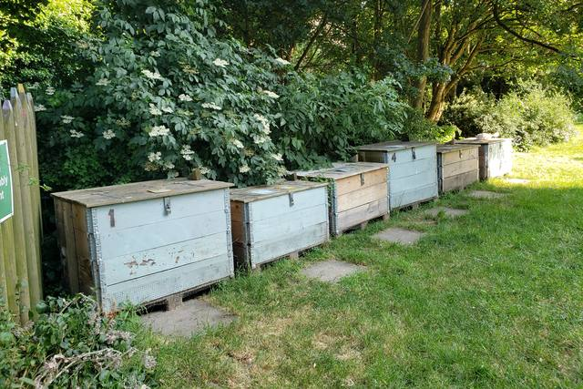

Guide
Garden waste: council bin, tip or skip?
A big tidy-up in the garden? Here is what your council bin costs, which tips take garden waste for free, and when a skip makes more sense.
- 4 councils compared
- Checked 27 Nov 2026


Quick answer
For everyday cuttings, a council garden bin is cheapest: £55 to £89 a year locally in 2026/27. For one big clear-out, the council tip takes garden waste from residents, and a skip is best when there is also soil, turf or rubble.
Key facts
- Council garden bins: £55 a year in Slough, £77 in Hillingdon, £80 in Spelthorne (plus £35 for the bin) and £89 in Windsor and Maidenhead.
- Free at the tip: Slough’s Chalvey tip takes garden waste free of charge, and Harefield is free for Hillingdon residents.
- Branch limits: about 5cm (2 inches) in RBWM bins, 7cm in Spelthorne and 9cm in Hillingdon sacks.
- Soil and turf: not wanted in garden bins. Tips must take 2 × 50-litre bags of your own DIY waste free; Surrey charges £5.60 a bag above its limit.
- Japanese knotweed: a piece of root as small as 1cm can grow, so it must never go in your garden bin or be mixed with other soil.
Watch out
Councils usually change garden waste prices every April. Figures on this page are what each source published when we checked on 27 November 2026 (Europe/London). Check your council’s page before you pay.
Your 4 options
Most garden waste can go four ways: a home compost heap, a paid council garden bin, a trip to the council tip, or a skip or skip bag.
Small and steady? Compost or a garden bin. One big job? The tip or a skip. Lots of soil, turf or rubble? Almost always a skip.
Compost at home
Free, and grass, leaves and dead plants break down in a home compost bin. Surrey’s recycling partnership says they “do not need to leave your garden”.
Council garden bin
A yearly subscription, emptied about every two weeks. Best for regular mowing and pruning.
The council tip
Every local tip on this page takes garden waste, and Chalvey and Harefield say it’s free for residents. Good for a car load or two.
Skip or skip bag
Costs more, but takes everything at once, including soil and old fencing. See skip, bag or van?
Council garden bins compared
Garden waste collections are an opt-in, paid service in every council on this page. Here is what each one charged for 2026/27.
| Council | Price 2026/27 | Bin or sacks | Good to know |
|---|---|---|---|
| Slough (Slough, Langley) | £55 a year for 25 fortnightly collections | A 240-litre green bin costs £52 if you don’t have one | 50% off the subscription if the sole occupiers get Pension Credit. Up to 4 bins. No collections for two weeks over Christmas. |
| Windsor and Maidenhead (RBWM) | £89 a year (fees as at 1 April 2026) | Green wheelie bin included if required | An extra bin is £89 a year, or £44 if requested within six months of your renewal date. Two to three weeks off over Christmas and New Year. |
| Spelthorne (Staines, Ashford, Sunbury) | £80 for April 2026 to March 2027 | One-off £35 for the bin | Extra bins are £45 a year plus £35 each, up to 3 per home. A garden waste sack is £55 a year. No collections from Christmas to the end of January. You can share a subscription with a neighbour. |
| Hillingdon (Uxbridge, Hayes) | £77 for 1 April 2026 to 31 March 2027 | 3 or 6 reusable 90-litre sacks, not a bin | Weekly from April to November, fortnightly December to February, none from 21 December to 3 January. Each sack must weigh no more than 15kg. One subscription per home. |
Good to know
In Slough and Spelthorne the bin is extra in your first year, so the real first-year cost is the subscription plus the bin: £107 in Slough and £115 in Spelthorne if you need a new one.
What goes in the garden bin
Grass, leaves, weeds, hedge trimmings, dead plants and small branches are fine everywhere. Soil, stones, turf and wood are the usual reasons a bin is left unemptied.
Show the full detail
- RBWM: branches no thicker than 2 inches, cut to fit in the bin with the lid closed. “Large amounts of soil, mud or dirt cannot be collected”, though small bits on roots are fine.
- Spelthorne: branches no thicker than 7cm. No soil, stones, gravel, turf, pet waste, seed trays, flower pots, wood, timber, sawdust or plastic bags.
- Hillingdon: branches under 9cm across and 50cm long. No soil, stones, rubble, turf cuttings, ash, wood, flowerpots or invasive weeds, and nothing left beside the sack.
- Slough: check the council’s garden waste terms and conditions, linked from its garden waste page.
Taking it to the tip
Every local council tip on this page accepts garden waste. Bring proof of address, as Stafferton Way and Harefield check it.
Local tips and garden waste, checked 27 November 2026
Chalvey, Slough
Slough Borough Council says Chalvey “continues to take garden waste free of charge”.
Stafferton Way, Maidenhead
Accepts green garden waste, and hardcore and soil. RBWM residents only: bring your Advantage Card, or photo ID plus a council tax or utility bill.
Surrey tips (Shepperton for Staines)
Garden waste is accepted at every Surrey community recycling centre.
Harefield, Hillingdon
Free for Hillingdon residents with a HillingdonFirst card, or a driving licence and a household bill. Non-residents in a car pay £11 a visit.
More on each tip is on our Slough, Maidenhead, Staines and Uxbridge pages.
When a skip makes sense
A skip suits a whole-garden makeover: hedges cut right back, an old shed, fence panels, slabs and soil all at once. It saves several trips to the tip.
Soil and stone are heavy, so a skip’s weight limit is reached long before it looks full. Our skip sizes guide shows which sizes the firms say are right for soil.
Paying a gardener to take it away?
Whoever carries your waste away should be registered with the Environment Agency. It takes two minutes to check a waste carrier’s licence, and fly-tipped waste can be traced back to you.
Soil, turf and stones
Garden bins won’t take soil or turf. Tips treat them as DIY waste, which since 31 December 2023 councils in England must take free in small amounts.
The government’s limit is about 2 × 50-litre rubble bags of your own DIY waste. Above that, a tip can charge, and a skip is often simpler.
Show the full detail
- The rule: Defra said that from 31 December 2023 all councils in England treat DIY waste like other household waste when it meets conditions “such as not exceeding 2x 50L rubble bags”.
- Surrey: rubble and soils (gravel, hardcore, rock, sand and stone) and whole sections of turf go to the 9 centres that take construction and DIY waste, including Shepperton. The free limit is two bags of up to 50 litres, no more than once every seven days in a car. Above that it’s £5.60 per bag, or £50 for a loose carload.
- Hillingdon: Harefield says certain DIY items carry a charge in large quantities. See our Uxbridge page for its rates.
- RBWM: Stafferton Way lists hardcore and soil among the items it accepts.
Japanese knotweed: never in the garden bin
Knotweed spreads from tiny pieces of root: GOV.UK says a new plant can grow from a piece “as small as 1cm”. You can be prosecuted for causing it to spread into the wild.
If it can’t be dealt with on site, it must go via a registered waste carrier to a landfill or incinerator with the right permit. Don’t put it in a garden bin or mix it with other soil, and check with any waste site before you take it.
Show the full detail
- You don’t legally have to remove knotweed from your land unless it’s causing a nuisance, but you must stop it spreading off your property.
- GOV.UK advises not to treat it yourself unless you have the skills and experience, and says chemical treatment usually takes at least 3 years.
- Knotweed must not be disposed of with other surplus soil, and the waste site must be told in advance that the load contains it.
- An individual who wants to burn knotweed only needs to check with the local council that burning is allowed, but the roots may survive burning.
Can I just burn it?
There’s no blanket ban on garden bonfires, but GOV.UK says you can’t get rid of household waste if it will cause pollution or harm people’s health.
You could be fined if smoke drifts across a road and becomes a danger to traffic, and the council can issue an abatement notice if a bonfire is a nuisance to neighbours. Composting or the tip is usually kinder.
A quick checklist
- Compost what you can. Grass, leaves and soft prunings are free to compost at home.
- Regular waste? Subscribe. Compare your council’s price above, and remember the bin may be extra in year one.
- One big clear-out? Use the tip. Bring proof of address, cut branches to fit your car, and bag soil separately.
- Lots of soil, turf or old fencing? Get a skip. Choose a smaller skip for heavy loads, and check whether it needs a permit if it goes on the road.
- Check anyone who takes it away. Look them up on the waste carrier register before you pay.
- Knotweed? Get specialist help. Never mix it with garden waste or soil.
Sources (14)
- Slough Borough Council, Garden waste collection service. Checked 27 November 2026.
- Royal Borough of Windsor and Maidenhead, Green garden waste subscription. Checked 27 November 2026.
- RBWM, Fees and charges 2026/27 (Appendix E), green waste subscribed collection £89 per annum. Checked 27 November 2026.
- Spelthorne Borough Council, Garden waste. Checked 27 November 2026.
- Hillingdon Council, Subscribe to our 2026/27 garden waste collection service. Checked 27 November 2026.
- Hillingdon Council, Garden waste service terms and conditions 2026/2027. Checked 27 November 2026.
- Hillingdon Council, Harefield Civic Amenity Site: cost of using the site. Checked 27 November 2026.
- Hillingdon Council, Harefield Civic Amenity Site: items accepted. Checked 27 November 2026.
- RBWM, Stafferton Way Household Waste and Recycling Centre. Checked 27 November 2026.
- Surrey Environment Partnership, Garden waste. Checked 27 November 2026.
- Surrey County Council, Construction and DIY waste. Checked 27 November 2026.
- GOV.UK (Defra), Charges for disposing of DIY waste at recycling centres scrapped. Checked 27 November 2026.
- GOV.UK (Environment Agency, Defra, Natural England), How to stop Japanese knotweed from spreading. Checked 27 November 2026.
- GOV.UK, Garden bonfires: the rules. Checked 27 November 2026.